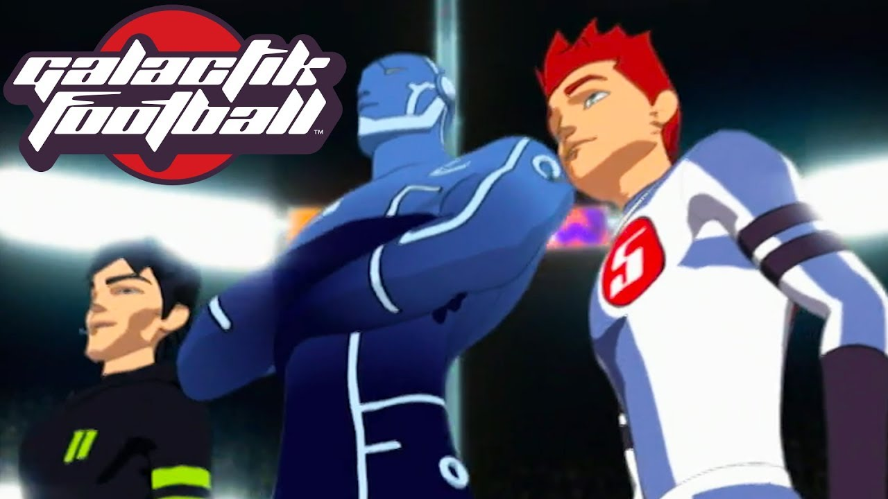
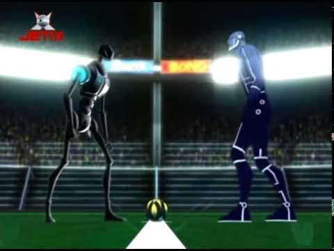

Quatre ans après leur victoire face aux Shadows, les Snow Kids s'apprêtent à disputer la deuxième Galactik Football Cup. Cependant, Ahito tombe malade et est remplacé comme gardien par sa cousine Yuki.
En outre, Rocket est suspendu de l'équipe en raison de l'utilisation illégale du Souffle et est remplacé par Mark, un autre jeune footballeur d'Akillian, qui avait déjà été considéré comme un joueur de remplacement. En l'absence de Rocket, D'Jok est nommé capitaine. Rocket quant à lui s'initie au Netherball, un sport illégal se déroulant dans un lieu secret nommé "La Sphère".

Après le rétablissement d'Ahito, lui et Yuki partagent les devoirs de gardien de but et, en tranchant en sa faveur, la ligue permet à Rocket de revenir dans l'équipe, ce qu'il a finalement fait grâce à Tia. D'Jok reste le capitaine malgré le retour de Rocket et mène l'équipe à une deuxième victoire consécutive de la Galactik Football Cup.
